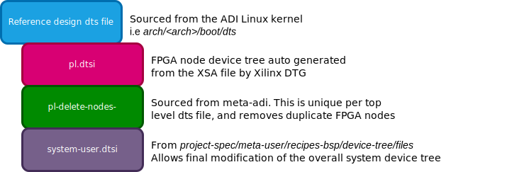

Petalinux Device Trees
Petalinux is Xilinx’s flavor of Linux based on the Yocto project. One of the unique pieces of Petalinux is how the device tree is automatically generated based on the imported XSA/HDF file, using Xilinx’s Device Tree Generator (DTG). The generated device tree includes nodes for the PS as well as nodes for the Xilinx blocks located in the PL. The DTG regenerates the device tree on each build, which makes it difficult to edit the .dts files directly for modification. Further, the PL nodes may conflict with Linux device drivers which may access the FPGA blocks. This is especially a problem for ADI’s provided reference designs which use IIO based drivers for accessing FPGA IP.
For meta-adi, the work around for device trees is to effectively be a
man-in-the-middle during the build process, overwriting the auto-generated
device tree. During the do_configure() stage, the device tree recipe of the
meta-adi layer will perform the following actions:
Replace the DTG generated system-top.dts with the specified device tree from the ADI Kernel source tree.
The DTG generated pl.dtsi file will then be included to capture the FPGA block device nodes.
The ADI specific pl-delete-nodes file, which removes any duplicates between the DTG generated PL nodes and the ones specified by the selected device tree, is added.
Finally, the meta-user system-user.dtsi is included to allow modification of the tree by the user.
A high-level view of the final meta-adi device tree looks like the following:
Device Tree Modifications
With Petalinux and meta-adi, there are several methods of modifying the device tree contents for your application. The following breaks down a few approaches as well as recommended use cases:
Method |
Description |
Use Case |
|---|---|---|
Add and modify nodes of a ADI provided device tree through the system-user.dtsi file |
Working with a standard evaluation kit and baseline reference design, with minimal device tree adjustments. |
|
Use a custom .dts file as the top of the device tree hierarchy, but still have access to the dtsi files available in the ADI Kernel source tree |
Working with a standard evaluation kit and baseline reference design, with significant additional device nodes, or the breadth of changes are too great to be done in system-user.dtsi to maintain an easy to follow update. This can also be used with custom hardware |
|
Start with a trimmed down device tree generated by the DTG, with custom capabilities added. The meta-adi device tree recipe is bypassed, leveraging the DTG output as-is. |
This may be ideal when working with custom hardware without an existing device tree in kernel source. |